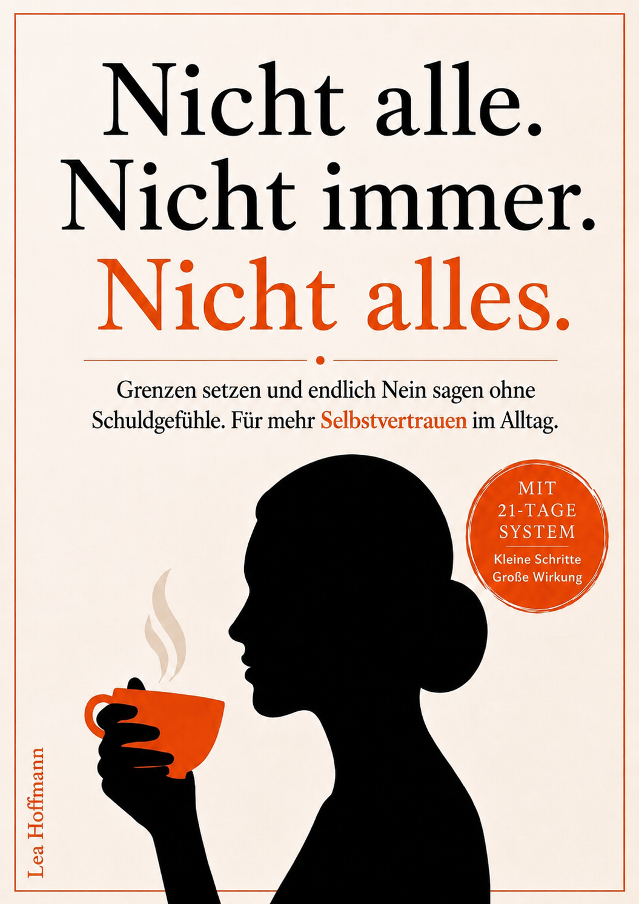

Eine konkrete Übung pro Tag. Direkt aus dem Buch. Kein Druck, keine Erinnerungen.
Das ist keine Kleinigkeit. Wenn du dein Leben lang Ja gesagt hast, sind 21 Tage zurück zu dir selbst ein echter Schritt.
Schau dir deine Notizen an. Welche Übungen haben für dich am meisten verändert? Welche Sätze nutzt du jetzt regelmäßig? Die bleiben bei dir.